Typically these are the shapes you want to practice if you want to study the 3d plane!
You can start with simple shapes, most commonly 2d shapes, like this square down here!
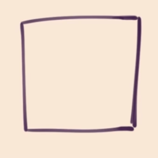
But by adding more lines you can make it into a 3d shape like this cube down here, giving the immersion of depth
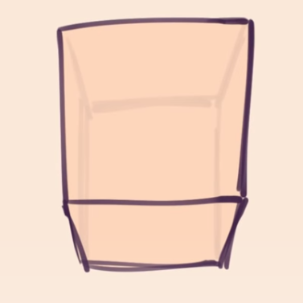
There are 2 kinds of shape namely the one is simplfied the other!
These shapes are known to be the basics in drawing, namely the ones used for math too and are in a fixed straight shape!
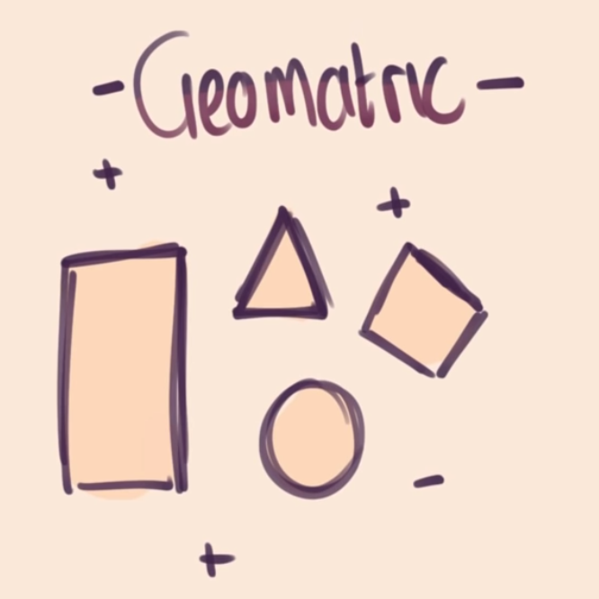
These shapes are known to be the free formed Asymetric shapes known for its unpredicatable curves and sizes!
You know that Geometric Shapes is really common to everything? Look around you, try and see how many shapes you can encounter! Real life things can be broken down into Geometric Shapes!
Example here we have a Cat!
Changed into Geometric shapes!
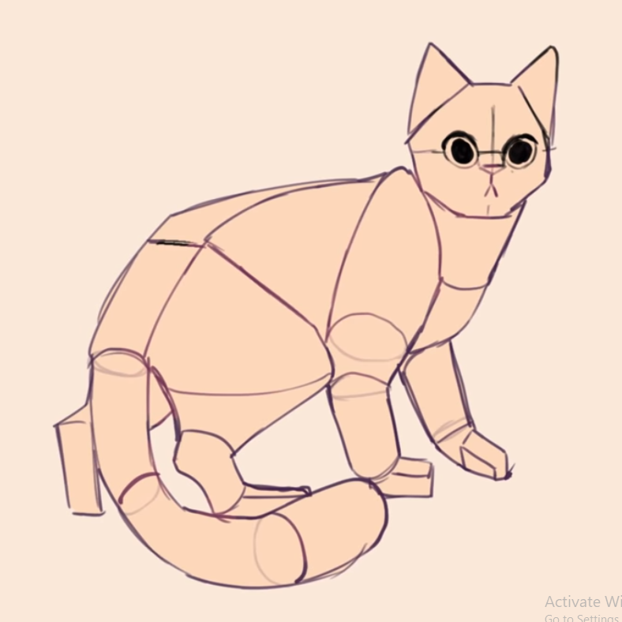
You know that Geometric Shapes is really common to everything? Look around you, try and see how many shapes you can encounter! Real life things can be broken down into Geometric Shapes!
Try drawing different 3d shapes in differnt perspectives!
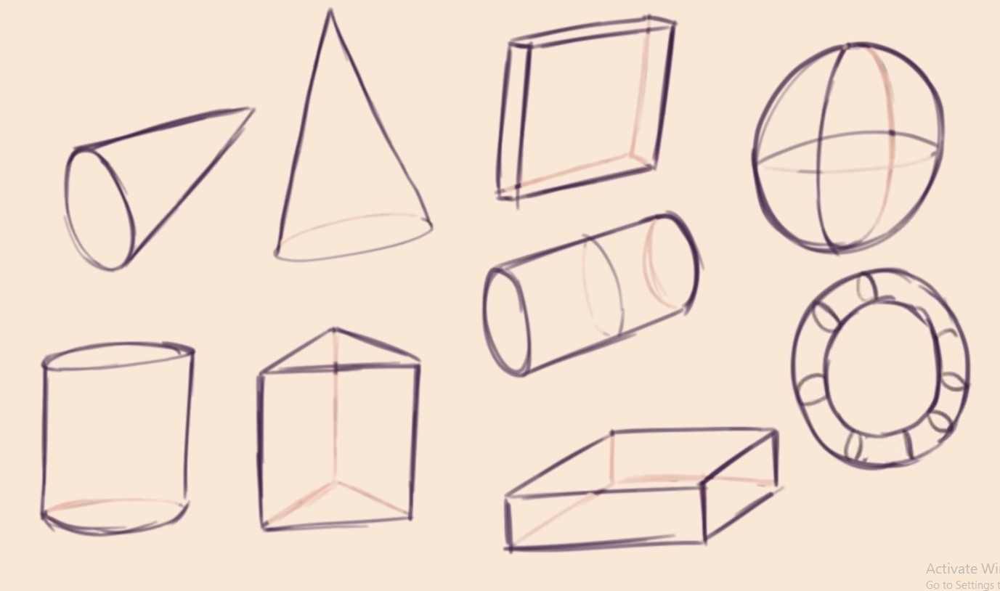
You can also try and find their central central lines!
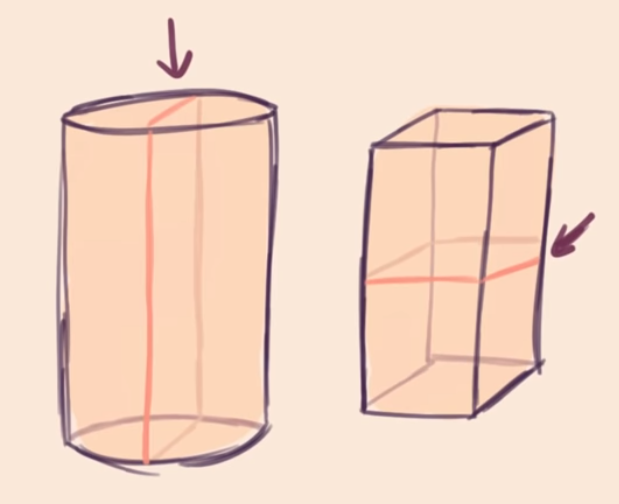
Try drawing these
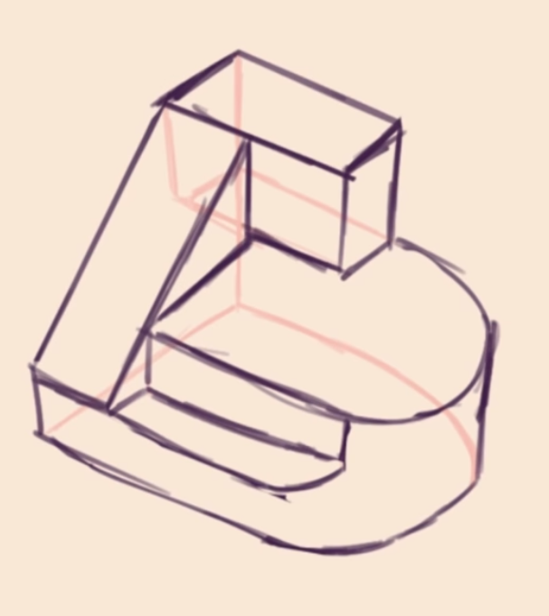These are clusters
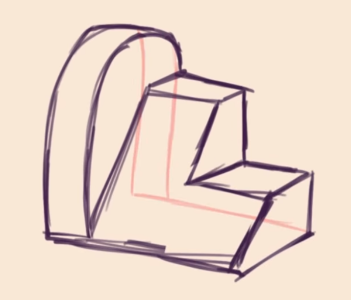These have exagerated depth
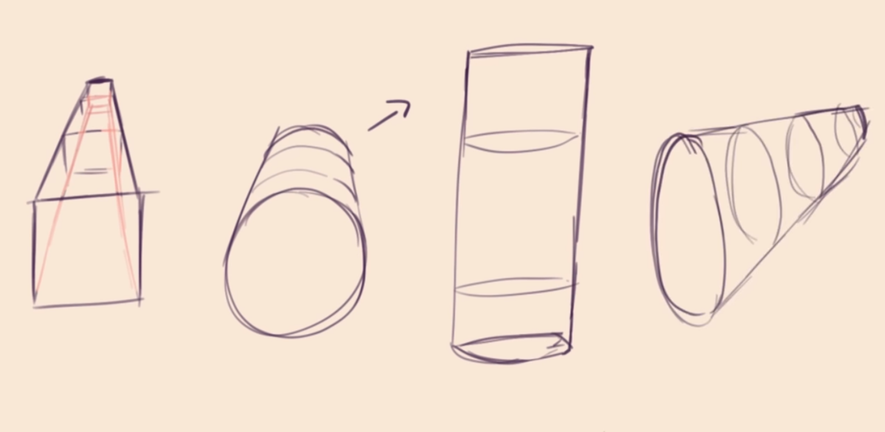More examples
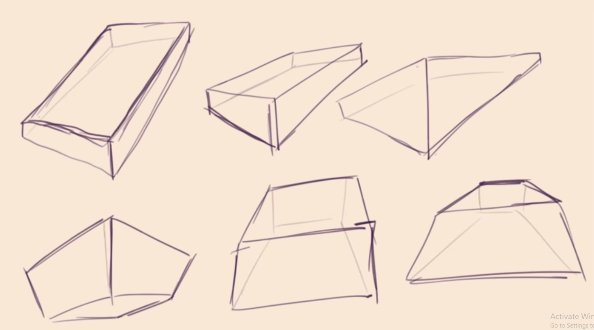you have learned about center lines earlier its time to apply what you have learned
Essentially, rubber bands are used to give more meaning to your shape inside your Organic shapes!
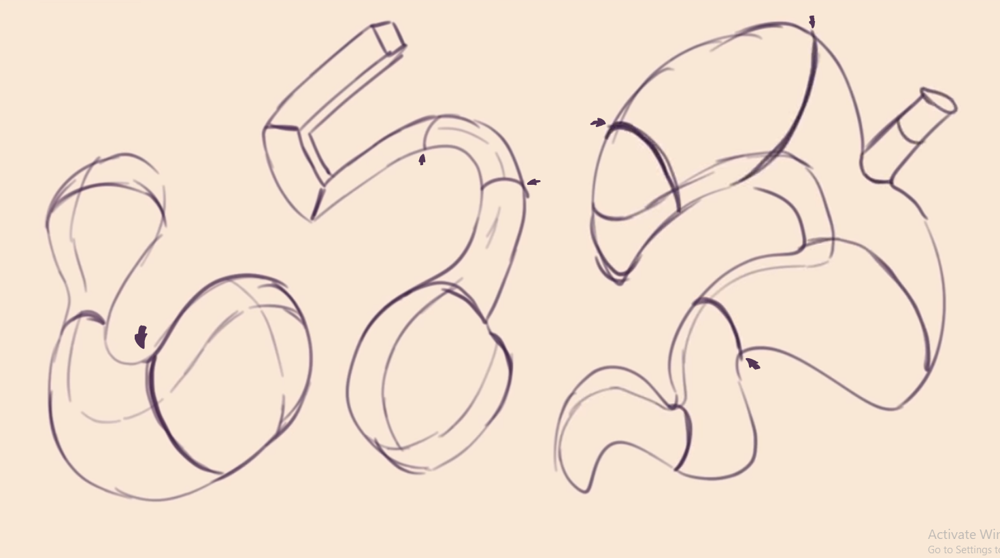
You can try basically just sticking shapes together, like what you did with the Geometric shapes before
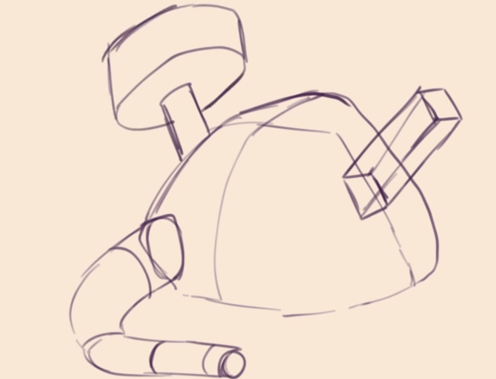Try drawing them interacting with each other, example would be your body in clothing, or just a towel whichever.
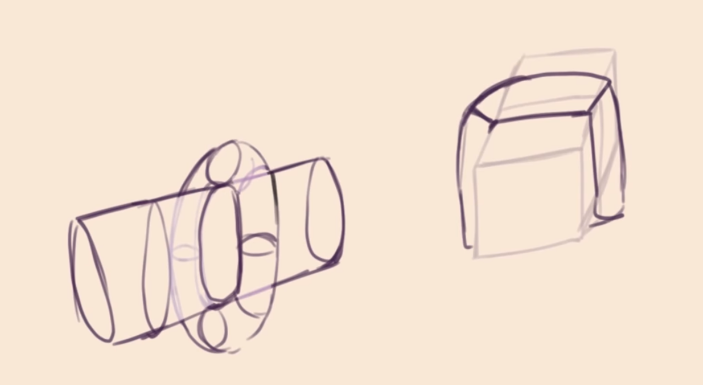Cutting shapes in half to have a deeper understanding in your 3d objects field!
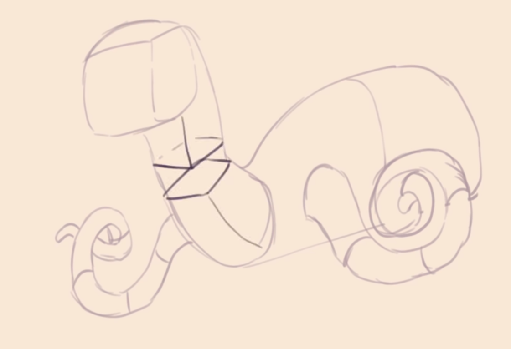